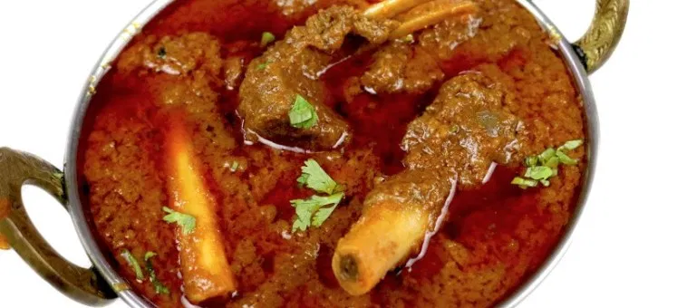

MUTTON QORMA:
-
Korma or qorma (Urdu: قورمہ; Hindi: क़ोरमा; Bengali: কোরমা) is a dish originating in the Indian subcontinent,[1] consisting of meat or vegetables braised with yogurt (dahi), water or stock, and spices to produce a thick sauce or gravy.[2]
Etymology
The English name is an anglicisation of Hindi-Urdu qormā (क़ोरमा, قورمہ), meaning "braise".[3][4] It refers to the cooking technique used in the dish.[2][5] All these words, and the names of dishes such as the Iranian ghormeh (Persian: قورمه), Turkish Kavurma and the Azerbaijani qovurma or kavarma, are ultimately derived from a Turkic word qawirma, meaning "[a] fried thing".[4] The Indian korma is, however, possibly unrelated in a culinary sense to the modern Turkish kavurma or to some other dishes using the same root word, as they use widely varying techniques and ingredients.[6]
History
Korma has its roots in the Mughlai cuisine[1] of the Indian subcontinent. A characteristic Mughal dish, it can be traced back to the 16th century and to the Mughal expansion into South Asia. Kormas were often prepared in the Mughal court kitchens, such as the famous white korma, perhaps garnished with vark, said to have been served to Shah Jahan and his guests at the inauguration of the Taj Mahal.[7]
Classically, a korma is defined as a dish where meat or vegetables are braised with yogurt or stock. The technique covers many different styles of korma. The flavour of a korma is based on a mixture of spices, including ground coriander and cumin, combined with yogurt kept below curdling temperature and incorporated slowly and carefully with the meat juices. Traditionally, this would have been carried out in a pot set over a very low fire, with charcoal on the lid to provide all-round heat. A korma can be mildly spiced or fiery and may use lamb, goat meat, chicken, beef or game; some kormas combine meat and vegetables such as spinach and turnip. The term shahi (English: royal), used for some kormas, indicates its status as a prestige dish, rather than an everyday meal, and its association with the court.
Preparation
A chicken korma dish
Potol (pointed gourd) korma
The korma style is similar to other braising techniques in that the meat or vegetable is first cooked briskly, or seared, using a high heat, traditionally using ghee, and then subjected to long, slow cooking using moist heat and a minimum of added liquid.[2] The pot may be sealed with dough during the last stages of cooking, using a technique called dum or dampokhtak.[2]
The korma can make use of a technique called bagar: later in the cooking, additional spices are mixed with heated ghee and then combined with the sauce formed by the braising; the pan is then covered and shaken to release steam and mix the contents.[8]
There is a wide variation between individual korma and other "curry" recipes. Chilli and ginger are often used, but the precise method of preparation results in widely different flavors. Indian bay leaves or dried coconut may be added, the latter being a predominantly South Indian flavoring.
A korma pilau (pilaf) is a rice and meat dish made with braised meat.[9]
Back to Home Page